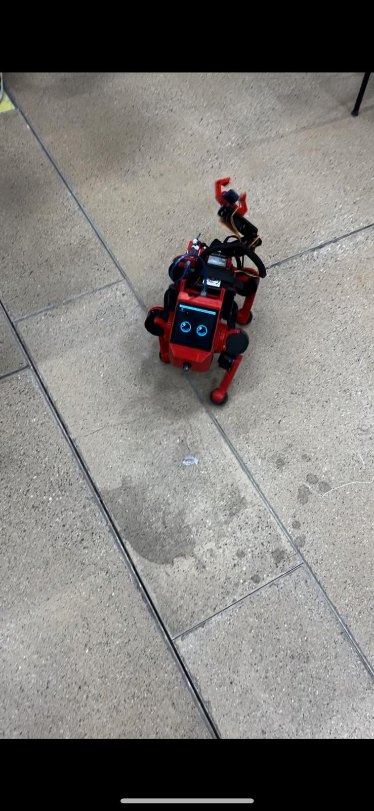

Project Overview
Led a sub-team within the BARK project to build Stanford's open-source Pupper V3. Co-assembled the quadruped platform and independently designed the custom robotic arm from scratch.
- Personal Contribution
- Project Difficulty
| Area | Personal Contribution | Project Difficulty |
|---|---|---|
| Mechanics | 9 | 4 |
| Electronics | 6 | 3 |
| Software | 3 | 7 |
Media Gallery
